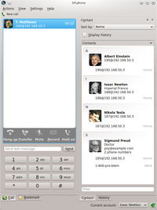

SFLphone
Dieser Artikel wurde für die folgenden Ubuntu-Versionen getestet:
Ubuntu 14.04 Trusty Tahr
Zum Verständnis dieses Artikels sind folgende Seiten hilfreich:
SFLphone ist ein Programm zur Internet-Telefonie (Voice-over-IP, kurz VoIP), auch Softphone genannt. Es wird nur ein SIP-Konto benötigt, welches häufig Bestandteil bei Angeboten von Internetprovidern ist. Von dem Funktionsangebot her ist es z.B. mit dem Programm Ekiga zu vergleichen.
Es ist eines der wenigen Softphones, das von Haus aus PulseAudio unterstützt. Es steht in zwei Varianten für KDE und GTK-basierte Desktops (GNOME, Xfce, LXDE) zur Verfügung und integriert sich in die jeweilige Desktop-Umgebung. Die Protokolle SIP und IAX2 werden unterstützt. Es eignet sich deshalb auch für Unternehmen, die Asterisk-Server einsetzen. 
Weitere Features:
Unbegrenzte Anzahl von Leitungen
Konferenzschaltungen
Audio-Codecs: Opus, Speex, G722, G711, GSM, G.729, iLBC
Verschlüsselung: SRTP, ZRTP, SDES, TLS
Übersetzt in 25+ Sprachen
kostenloser SIP-Account von sflphone.org (auf Wunsch)
Das Projekt wurde Anfang Mai 2015 umbenannt  und nennt sich seitdem Ring . Dabei handelt es sich um eine Weiterentwicklung von SFLphone zum universellen Instant Messenger mit der Möglichkeit, ohne einen zentralen Server zu kommunizieren (die SIP-Funktionalität ist weiter enthalten).
und nennt sich seitdem Ring . Dabei handelt es sich um eine Weiterentwicklung von SFLphone zum universellen Instant Messenger mit der Möglichkeit, ohne einen zentralen Server zu kommunizieren (die SIP-Funktionalität ist weiter enthalten).
Installation¶
SFLphone ist Bestandteil der offiziellen Paketquellen. Folgende Pakete müssen installiert [1] werden:
Für KDE:
sflphone-kde (universe, ab Ubuntu 14.04)
 mit apturl
mit apturl
Paketliste zum Kopieren:
sudo apt-get install sflphone-kde
sudo aptitude install sflphone-kde
oder für GTK-basierte Desktops (GNOME, Xfce, LXDE):
sflphone-gnome (universe)
mit apturl
Paketliste zum Kopieren:
sudo apt-get install sflphone-gnome
sudo aptitude install sflphone-gnome
Hinweis:
Auch wenn das Paket "gnome" im Namen trägt, hat es keine Abhängigkeiten von GNOME-spezifischen Bibliotheken.
Wenn man den GNOME-Client installiert, ist die Evolution-Adressbuchintegration nicht mit dabei. Um dies zu ermöglichen, muss noch ein weiteres Paket installiert werden:
sflphone-evolution (universe)
mit apturl
Paketliste zum Kopieren:
sudo apt-get install sflphone-evolution
sudo aptitude install sflphone-evolution
Konfiguration¶
Bei ersten Programmstart wird man von einem Assistenten begrüßt, welcher einen durch die nötigen Schritte führt, um einen Zugang zu konfigurieren. Hier kann man sich entscheiden, entweder einen bestehenden Zugang (die nötigen Parameter erhält man vom eigenen SIP-Anbieter) zu verwenden oder einen neuen kostenlosen Zugang bei sflphone.org zu registrieren. Die Einstellungen lassen sich jeder Zeit im Einstellungsmenü anpassen.
Bedienung¶
Die Oberfläche von SFLphone lässt sich beliebig anpassen. Die einzelnen Unterfenster lassen sich aus dem Hauptfenster lösen und nach eigenen Wünschen anordnen oder ganz ausblenden.
Problembehebung¶
Unity¶
Unter der Desktop-Oberfläche Unity steht das Programm nicht über das Benachrichtigungsfeld zur Verfügung. Warum das so ist und wie man das ggf. korrigieren kann, wird im Artikel Unity Desktop beschrieben.
 Übersichtsartikel
Übersichtsartikel- Erstellt mit Inyoka
-
 2004 – 2017 ubuntuusers.de • Einige Rechte vorbehalten
2004 – 2017 ubuntuusers.de • Einige Rechte vorbehalten
Lizenz • Kontakt • Datenschutz • Impressum • Serverstatus -
Serverhousing gespendet von